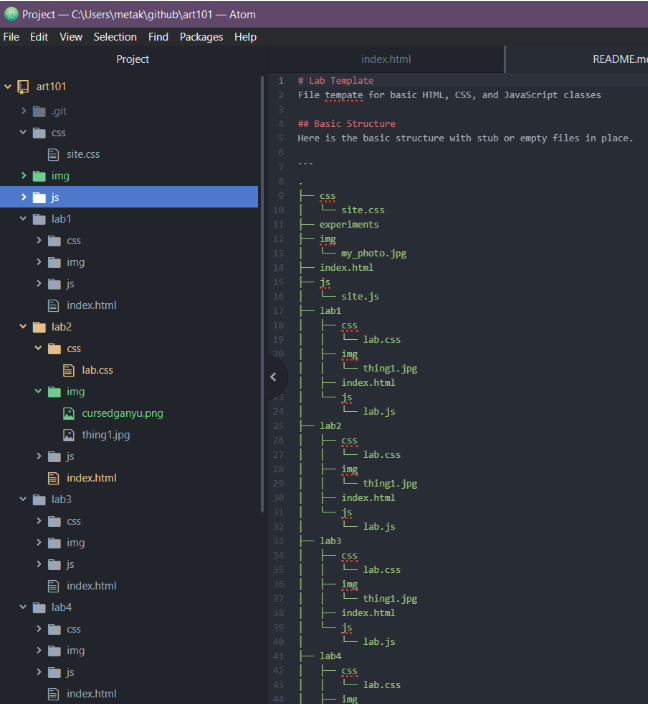
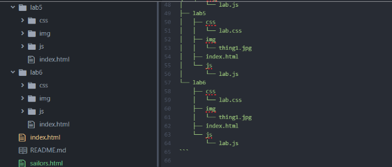

In this lab, we went overa and reviewed local file structures on our local computers and modified the index.html files.
The challenges that I had faced was trying to distinguish between the index.html in different folders - I have to be concious of what index.html file I am modifying.
If you are seeing this webpage, and you're able to interact with said the webpage, it means that I have succeeded! Below is the screenshoted proof of the file structure I've created and used:
 